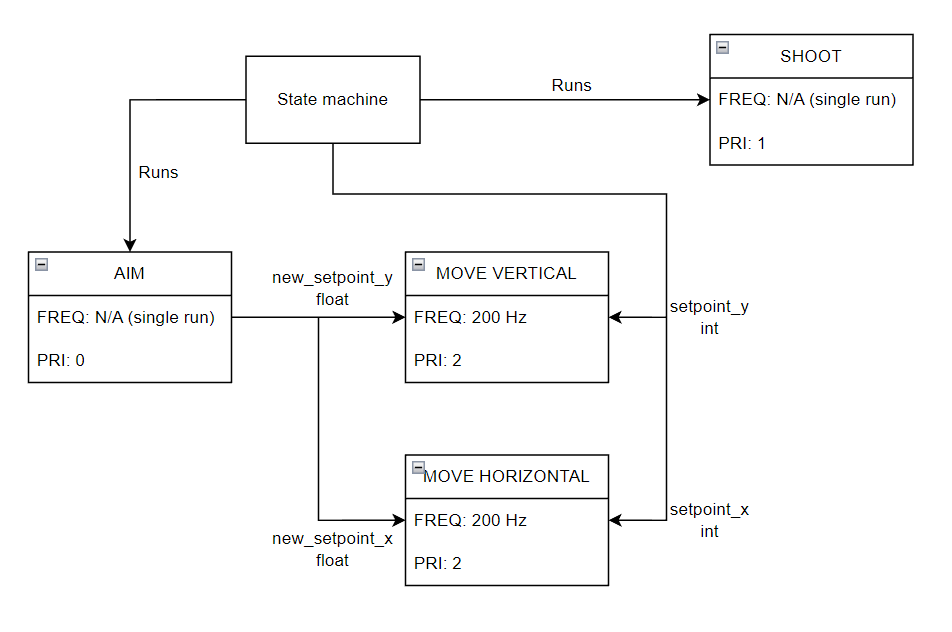

The following files are included in this software:
main.py: The main turret duel program mlx_cam.py: A driver for the MLX90640 camera
mlx90640: A folder containing dependencies required to run the MLX90640 camera driver motor_driver.py: A library containing a class for a motor driver servo_driver.py: A library containing a class for a servo driver encoder_reader.py: A library containing a class for an encoder reader closedloopcontrol.py: A library containing a class for a proportional system controller
Tasks
The turret code can be summarized as a list of tasks:
Adjusting the blaster horizontally
Adjusting the blaster vertically
Shooting a dart
Detecting a target (aiming)
Although the intent of this project was to have these tasks run pseudo-simultaneously using a task-sharing algorithm, this was ommitted due to the almost mutually exclusive nature of these tasks, which can be attributed to the following:
The original design having the camera mounted directly on the blaster. Due to refresh rate constraints, an image could not be taken until the blaster was stationary. The change to a camera mounted separate from the turret was done at the last minute, so the code was not changed to reflect the new ability to take an image while moving.
The blaster not being able to move until the aiming point was calculated. Calculating the aiming point was a computationally expensive task, taking at least half a second to complete. There was no benefit to making this task a generator, as the motors would remain stationary until the new setpoints were calculated. If the code was updated to reflect the new ability to take an image while the turret was moving, then this calculation could still occur during a movement phase.
As a result, the only tasks that can be considered "shared" at any given point are the vertical and horizontal adjustments.
The task diagram is shown below.

State Structure
The main duel program is organized into six distinct states:
S0_INIT: The turret initializes all necessary internal variables.
S1_TURN180: The turret turns 180 degrees. It stays in this state until 5 seconds have passed. This state consists of both move tasks.
S2_AIM: The turret takes a picture using the infrared camera, processes the image, and calculates the necessary movement to aim at the target. This state consists exclusively of the target detection task.
S3_ADJUST: The turret moves according to the calculations in the AIM state. The turret stays in this state for 500 milliseconds. This state consists of both move tasks.
S4_SHOOT: The turret spins up the flywheels, then actuates a servo to push a loaded dart into the flywheels. This state consists exclusively of the shoot task.
S5_SAFE: The turret powers down. All motors are disabled and the trigger mechanism is returned to the original position.
 1.9.6
1.9.6